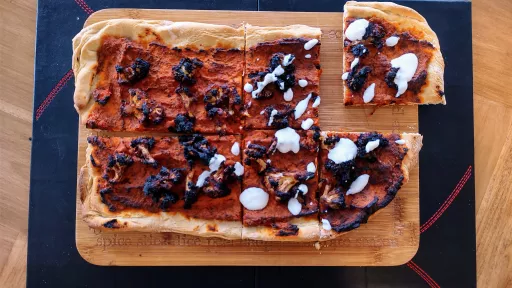

1 hr 10 mins
Serves 4VegetarianVeganDairy FreeNut Free
American

A little tip: if you roll out your pizza dough and find it isn't cooperating - either because it's not molding into the shape you want, or if it presents little rips and tears - don't worry about it. Just collect it all together in a ball, knead it a few more times until the dough is smooth, and try again. Just remember to keep your surface and rolling pin nice and floured, so it doesn't stick.
Ingredients
Pizza dough
330g self-rising flour
240ml luke warm water
2tbsp olive oil
1tsp salt
BBQ cauliflower
½head cauliflower, cut into bite-sized florets
180ml vegan BBQ sauce, use 120 ml if you want the BBQ taste to be more mild
½tsp garlic powder
½tsp onion powder
Pizza sauce
180g hummus
70g tomato paste
1tsp dried oregano
1tsp dried basil
½tsp dried thyme
½tsp salt
¼tsp black pepper
Garlic yogurt sauce
180ml unsweetened plant-based yogurt, we used soy
2cloves garlic
¼tsp salt
Instructions
Preheat the oven to 220°C.
To make the pizza dough: combine all the ingredients in a bowl and mix until well combined. Then knead the dough with your hands, adding a sprinkle of more flour or water if needed until you have a smooth, firm dough.
Cover the dough with a clean kitchen towel and let it rest about 20 minutes
.
To make the BBQ cauliflower: add the cauliflower florets to a parchment lined baking tray.
To a small bowl, add the BBQ sauce, garlic powder, and onion powder, and stir to combine. Pour half of the sauce over the florets, and toss to coat. Reserve the other half of the BBQ sauce for later.
Spread out the BBQ florets evenly on the baking tray, and bake in the oven for 20 minutes
, flipping once half way.
To make the pizza sauce: to a bowl, combine the hummus, tomato paste, oregano, basil, thyme, salt, and pepper. Stir and set aside.
Lightly coat a work surface with flour. Divide the dough in two balls and roll the dough out, using a rolling pin, to the size of your baking dish - ours was 25 x 35 cm. Continue to lightly flour your working surface and your rolling pin to prevent sticking.
By now, the cauliflower should be done baking. When removed from the oven, transfer the cauliflower to a bowl, and pour over the remaining half of the BBQ sauce. Toss to coat.
Line two baking trays with parchment paper, and transfer the rolled out pizza dough to the lined baking trays. If you'd like, you can pinch the edges of the dough around the perimeter, to create a little raised crust.
Divide the hummus and tomato pizza sauce over both pizza bases, and spread it out evenly over the surface.
Divide and distribute the BBQ cauliflower florets over top of both pizzas.
Bake the pizza in the preheated oven for 20 minutes
, or until the crust is lightly golden, stopping to flip the position of the pizzas in the oven once at the halfway point.
To make the garlicyogurt sauce: combine the yogurt, garlic, and salt in a bowl, and stir to combine.
When the pizzas are ready, drizzle some of the garlicyogurt sauce on top, and sprinkle over the sliced scallion.